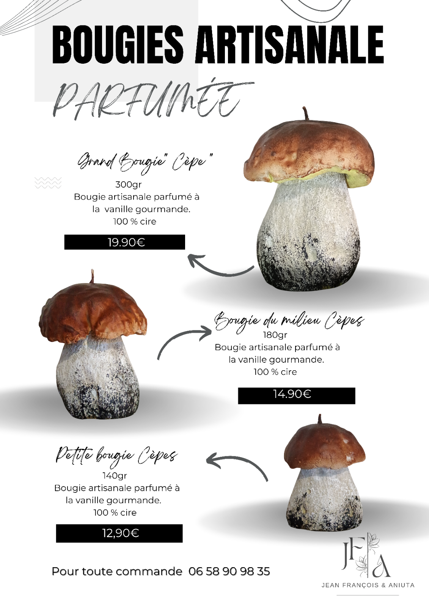
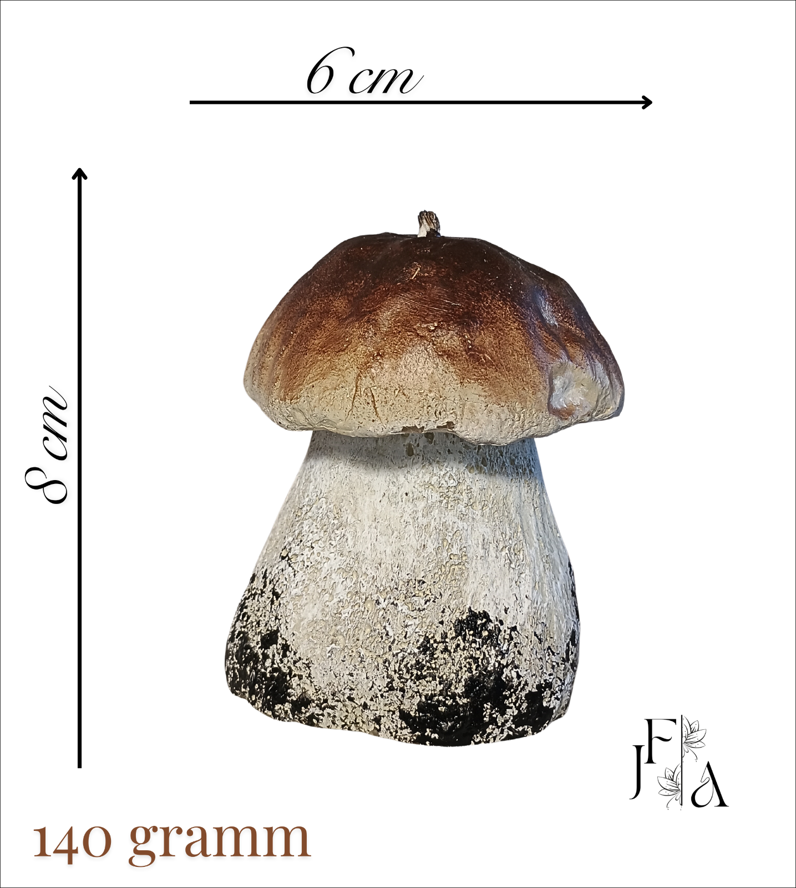
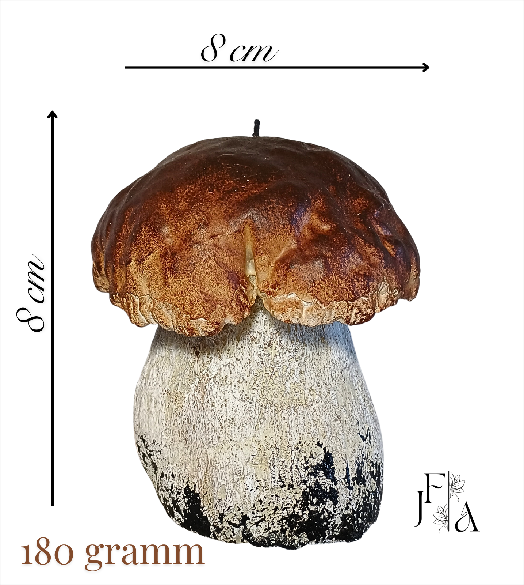
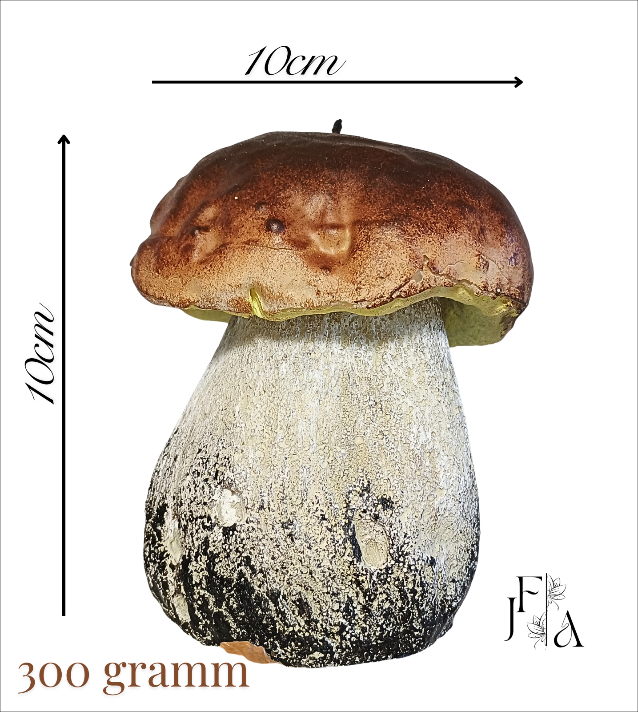

Découvrez nos Bougies Artisanales
Chaque bougie Jean François & Aniuta est une invitation à l'évasion olfactive, conçue avec la plus grande exigence. Coulées à la main dans notre atelier en Lozère, elles incarnent notre engagement envers l'artisanat de qualité, le naturel et le respect de l'environnement. Découvrez la différence d'une bougie véritablement artisanale.

Commander en ligne via WhatsApp



Conseils d'Utilisation
Pour profiter au maximum de votre bougie Jean François & Aniuta, suivez cette recommandation :
- Sécurité : Ne laissez jamais une bougie allumée sans surveillance et tenez-la hors de portée des enfants et des animaux.